# Librerías
pacman::p_load(haven,descr,sjmisc,dplyr,sjPlot, ggplot2)
# Data ISSP (original)
issp2009 <- read_dta("https://multinivel-facso.netlify.app/assignment/data/ZA5400_v4-0-0.dta")
names(issp2009)
names(issp2009) <- tolower(names(issp2009)) # cambia a minúsculasCombinando datos de distintos niveles
Correspondiente a la sesión del viernes, 8 de septiembre de 2023
1 Introducción
Desde un punto de vista operativo, las variables de nivel dos se pueden clasificar en dos tipos:
Las que se pueden generar a partir desde los datos individuales (como por ejemplo, promedio/porcentaje de una variable de nivel 1)
Las que provienen de fuentes externas a los datos individuales (ej: datos administrativos, nivel de democracia de un país, nivel de vulnerabilidad de una escuela, etc.)
Para los ejemplos vamos a trabajar con la base de datos de ISSP 2009 (www.issp.org), modulo desigualdad económica (datos originales: ZA5400_v4-0-0.dta), y luego con la base del Quality of Government (http://qog.pol.gu.se/)
2 Preparación de datos individuales
Primero cargamos la base de la encuesta ISSP desigualdad (mayor información sobre esta encuesta aquí)
Algunos ajustes preliminares a los datos:
Primero vamos a seleccionar algunas variables de la base de datos (para detalles, ver libro de códigos):
- v5 : ID país
- v10: para salir adelante lo importante es el esfuerzo
- sex: sexo
- age: edad (en años)
issp2009r=issp2009 %>% select(v5,v10,sex,age) # dplyrY ahora recodificaciones y limpieza de perdidos
# v10: Esfuerzo
issp2009r$effort=issp2009r$v10
freq(issp2009r$effort) # freq es de descr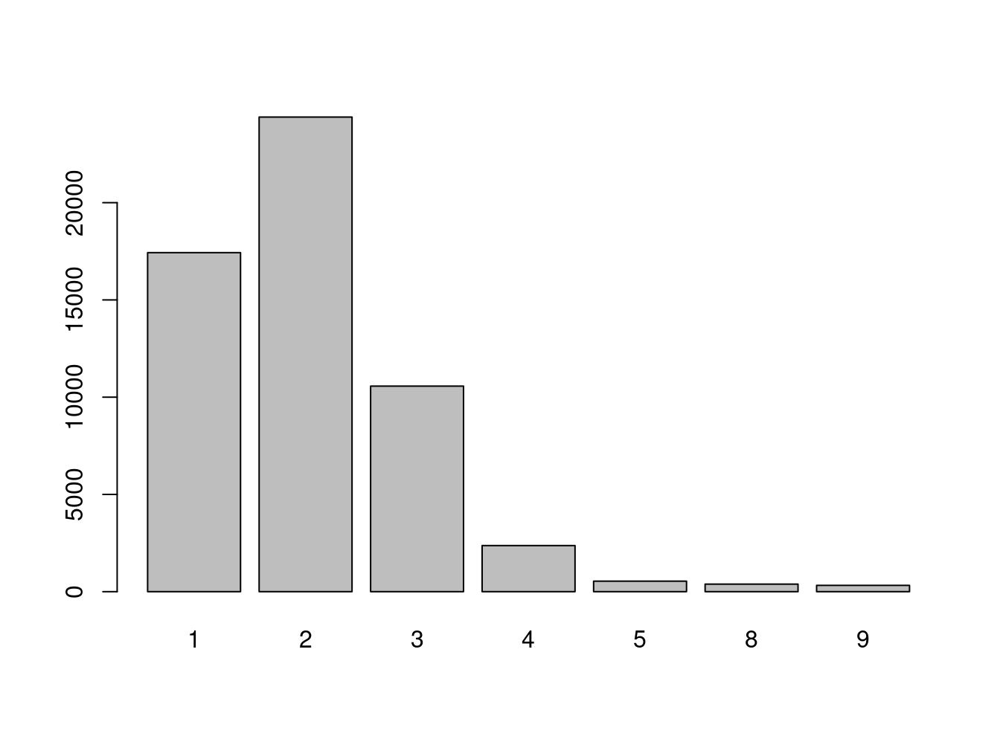
Q1e Getting ahead: How important is hard work?
Frequency Percent
1 17432 31.1169
2 24403 43.5605
3 10568 18.8644
4 2370 4.2306
5 539 0.9621
8 387 0.6908
9 322 0.5748
Total 56021 100.0000 freq(to_label(issp2009r$effort)) # to_label de sjmisc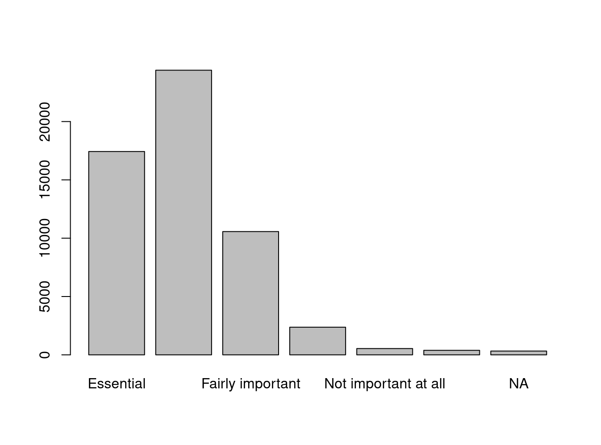
Q1e Getting ahead: How important is hard work?
Frequency Percent
Essential 17432 31.1169
Very important 24403 43.5605
Fairly important 10568 18.8644
Not very important 2370 4.2306
Not important at all 539 0.9621
Cant choose 387 0.6908
NA 322 0.5748
Total 56021 100.0000 issp2009r$effort=set_na(issp2009r$effort,na = c(8,9))
issp2009r$effort=rec(issp2009r$effort, rec = "rev") # Reverse code, sjmisc
freq(to_label(issp2009r$effort)) # ok.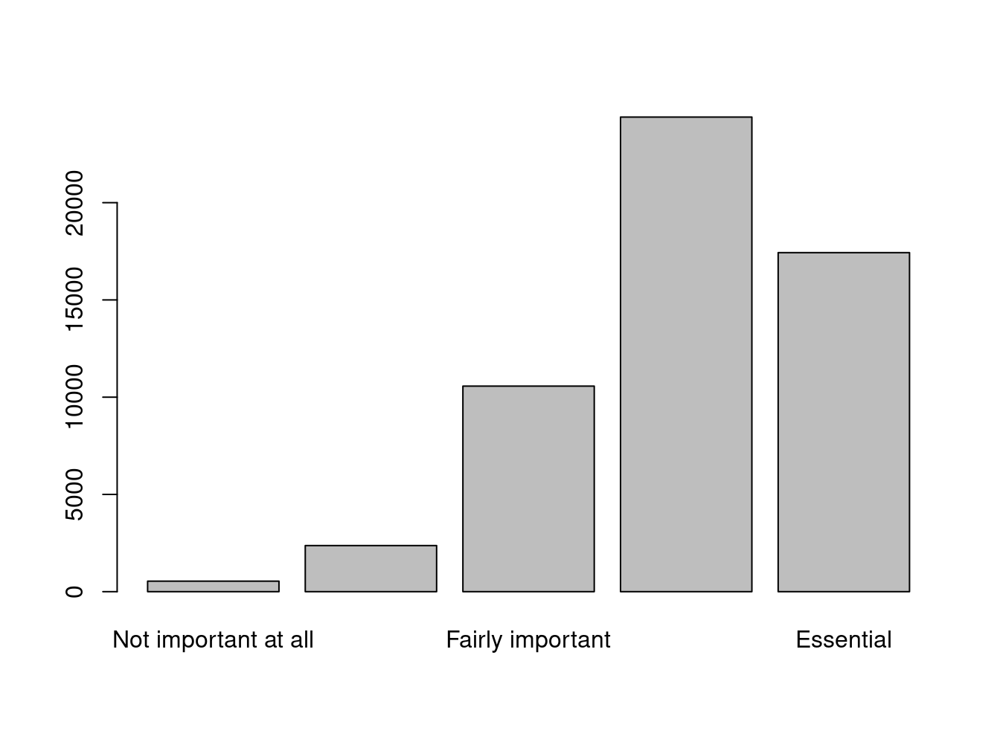
Q1e Getting ahead: How important is hard work?
Frequency Percent Valid Percent
Not important at all 539 0.9621 0.9745
Not very important 2370 4.2306 4.2848
Fairly important 10568 18.8644 19.1062
Very important 24403 43.5605 44.1188
Essential 17432 31.1169 31.5158
NA's 709 1.2656
Total 56021 100.0000 100.0000 freq(issp2009r$effort) # ok.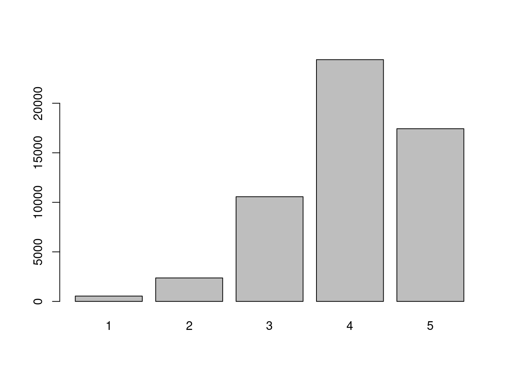
Q1e Getting ahead: How important is hard work?
Frequency Percent Valid Percent
1 539 0.9621 0.9745
2 2370 4.2306 4.2848
3 10568 18.8644 19.1062
4 24403 43.5605 44.1188
5 17432 31.1169 31.5158
NA's 709 1.2656
Total 56021 100.0000 100.0000# Sex
freq(issp2009r$sex);freq(to_label(issp2009r$sex)) # freq es de descr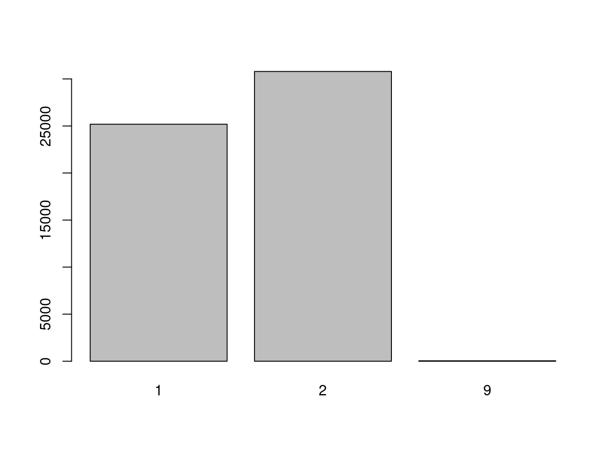
R: Sex
Frequency Percent
1 25184 44.95457
2 30792 54.96510
9 45 0.08033
Total 56021 100.00000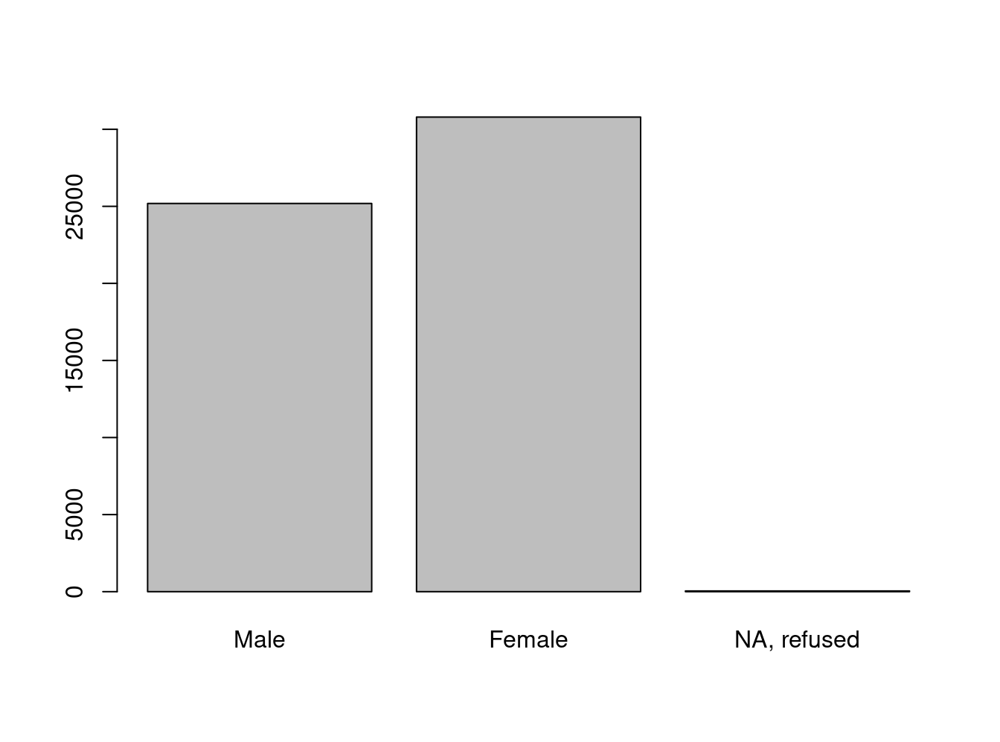
R: Sex
Frequency Percent
Male 25184 44.95457
Female 30792 54.96510
NA, refused 45 0.08033
Total 56021 100.00000 issp2009r$sex=rec(issp2009r$sex, rec="1=0 [Male];2=1[Female]; 9=NA")
# Age
freq(issp2009r$age)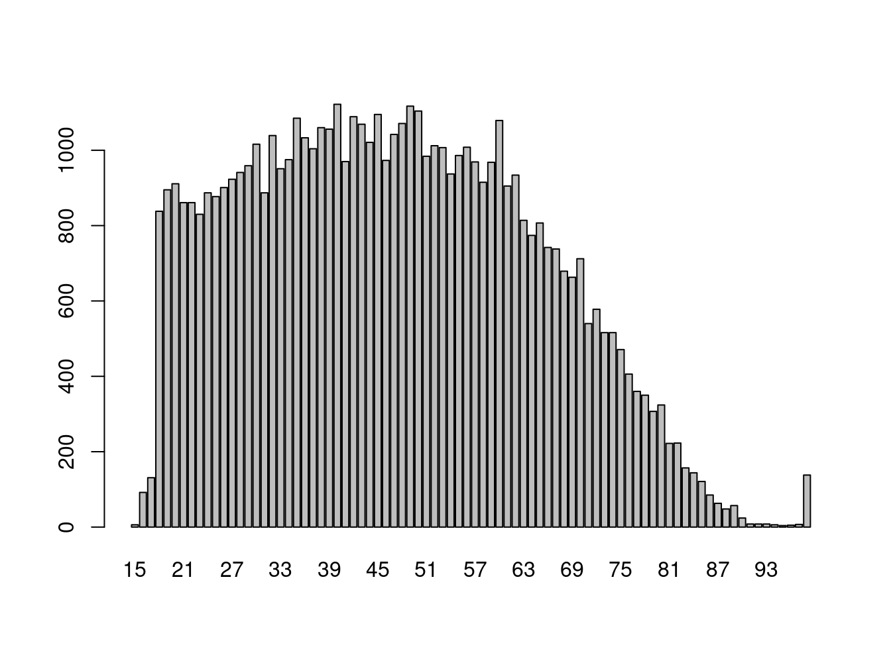
R: Age
Frequency Percent
15 6 1.071e-02
16 92 1.642e-01
17 131 2.338e-01
18 838 1.496e+00
19 895 1.598e+00
20 911 1.626e+00
21 861 1.537e+00
22 861 1.537e+00
23 830 1.482e+00
24 887 1.583e+00
25 877 1.565e+00
26 901 1.608e+00
27 923 1.648e+00
28 941 1.680e+00
29 959 1.712e+00
30 1016 1.814e+00
31 887 1.583e+00
32 1039 1.855e+00
33 951 1.698e+00
34 975 1.740e+00
35 1085 1.937e+00
36 1033 1.844e+00
37 1004 1.792e+00
38 1060 1.892e+00
39 1056 1.885e+00
40 1122 2.003e+00
41 970 1.731e+00
42 1089 1.944e+00
43 1069 1.908e+00
44 1021 1.823e+00
45 1095 1.955e+00
46 973 1.737e+00
47 1042 1.860e+00
48 1071 1.912e+00
49 1117 1.994e+00
50 1104 1.971e+00
51 984 1.756e+00
52 1012 1.806e+00
53 1007 1.798e+00
54 937 1.673e+00
55 986 1.760e+00
56 1008 1.799e+00
57 969 1.730e+00
58 915 1.633e+00
59 968 1.728e+00
60 1079 1.926e+00
61 905 1.615e+00
62 934 1.667e+00
63 814 1.453e+00
64 774 1.382e+00
65 807 1.441e+00
66 742 1.325e+00
67 738 1.317e+00
68 679 1.212e+00
69 663 1.183e+00
70 712 1.271e+00
71 540 9.639e-01
72 578 1.032e+00
73 516 9.211e-01
74 516 9.211e-01
75 471 8.408e-01
76 406 7.247e-01
77 360 6.426e-01
78 350 6.248e-01
79 307 5.480e-01
80 324 5.784e-01
81 222 3.963e-01
82 223 3.981e-01
83 157 2.803e-01
84 144 2.570e-01
85 121 2.160e-01
86 85 1.517e-01
87 63 1.125e-01
88 48 8.568e-02
89 57 1.017e-01
90 24 4.284e-02
91 8 1.428e-02
92 8 1.428e-02
93 8 1.428e-02
94 6 1.071e-02
95 4 7.140e-03
97 5 8.925e-03
98 7 1.250e-02
99 138 2.463e-01
Total 56021 1.000e+02 issp2009r$age=set_na(issp2009r$age, na=c(99)) 3 Generando datos nivel 2 a partir de datos individuales
En este caso se habla también de datos “agregados” o “colapsados”. Para agregar, utilizaremos primero una función simple para hacerlo en base al promedio
Por ejemplo, agregar a la base de datos el promedio de edad por país (v5)
issp2009r = issp2009r %>%
group_by(v5) %>%
mutate(meanage = mean(age, na.rm = TRUE))Otros posibles agregados:
# Desviación estándar
issp2009r = issp2009r %>%
group_by(v5) %>%
mutate(sdage = sd(age, na.rm = TRUE))
# Tamaño (cantidad de casos por país)
issp2009r = issp2009r %>%
group_by(v5) %>%
mutate(count = length(v5))Visualizar datos en tabla
issp2009r %>%
group_by(Country=to_label(v5)) %>%
summarise("Mean Age"=mean(meanage),
"SD Age"=mean(sdage),
N=mean(count)) %>%
print(n = nrow(.))# A tibble: 41 × 4
Country `Mean Age` `SD Age` N
<fct> <dbl> <dbl> <dbl>
1 AR-Argentina 46.7 17.5 1133
2 AU-Australia 52.5 16.8 1525
3 AT-Austria 45.1 17.1 1019
4 BE-Belgium 48.9 17.6 1115
5 BG-Bulgaria 49.1 17.2 1000
6 CL-Chile 46.6 17.6 1505
7 CN-China 43.0 14.1 3010
8 TW-Taiwan 44.8 16.6 2026
9 HR-Croatia 45.7 17.6 1201
10 CY-Cyprus 42.6 15.4 1000
11 CZ-Czech Republic 46.8 16.8 1205
12 DK-Denmark 50.2 17.0 1518
13 EE-Estonia 50.9 18.8 1005
14 FI-Finland 47.6 16.5 880
15 FR-France 55.1 15.7 2817
16 DE-Germany 49.6 17.9 1395
17 HU-Hungary 46.2 15.9 1010
18 IS-Iceland 46.1 17.3 947
19 IL-Israel 43.5 17.5 1193
20 IT-Italy 48.3 17.1 1084
21 JP-Japan 49.2 17.6 1296
22 KR-South Korea 43.5 15.2 1599
23 LV-Latvia 44.4 17.0 1069
24 LT-Lithuania 51.5 18.4 1023
25 NZ-New Zealand 50.6 17.0 935
26 NO-Norway 48 15.2 1246
27 PH-Philippines 42.5 16.1 1200
28 PL-Poland 46.0 17.1 1263
29 PT-Portugal 49.4 18.1 1000
30 RU-Russia 46.8 18.4 1603
31 SK-Slovakia 46.3 16.3 1159
32 SI-Slovenia 46.7 17.8 1065
33 ZA-South Africa 39.3 15.7 3305
34 ES-Spain 47.1 17.9 1215
35 SE-Sweden 48.5 16.3 1137
36 CH-Switzerland 50.1 17.7 1229
37 TR-Turkey 41.2 15.5 1569
38 UA-Ukraine 48.2 17.7 2012
39 GB-Great Britain and/or United Kingdom 50.1 17.2 958
40 US-United States 49.5 17.1 1581
41 VE-Venezuela 36.8 15.1 969Exploración gráfica
bar_age=ggplot(issp2009r,
aes(reorder(to_label(v5), -meanage),meanage))
bar_age + geom_bar(stat = "summary") +
coord_flip() +
theme(axis.text=element_text(size=5),
axis.title=element_text(size=10,face="bold")) +
labs(x=" ", y="Age ")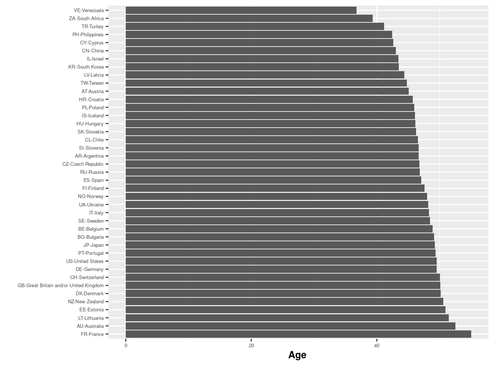
box_age= ggplot(issp2009r,
aes(reorder(to_label(v5), -meanage),age))
box_age + geom_boxplot() +
coord_flip() +
theme(axis.text=element_text(size=5),
axis.title=element_text(size=10,face="bold")) +
labs(x=" ", y="Age ")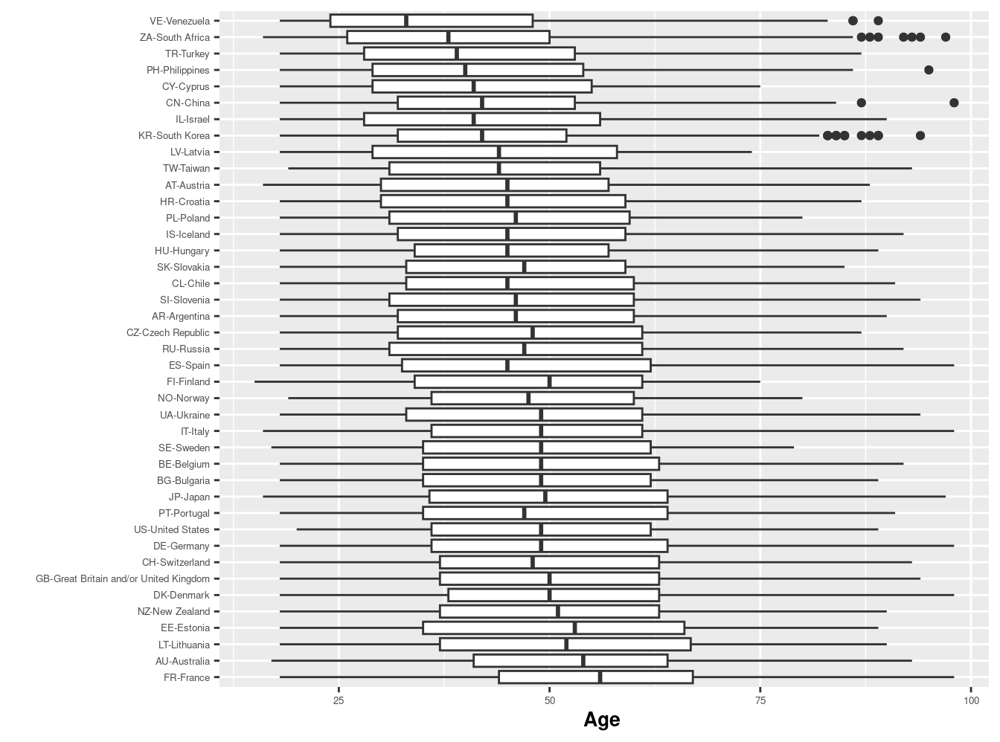
4 Preparación de datos externos de nivel 2
Para esto usaremos la base del Quality of Government Indicators (QoG).
qog=read_stata("https://multinivel-facso.netlify.app/assignment/data/qog_bas_ts_jan23_stata14.dta")Dimensiones de la base:
dim(qog) [1] 15366 254Tenemos 254 variables (columnas) para 15366 filas (países/años)
Ya que los países (cname) y años (year) se repiten en distintos momentos en el tiempo, veamos cuantos hay en total en la base:
qog %>% group_by(cname) %>% summarise() # 204 países# A tibble: 204 × 1
cname
<chr>
1 Afghanistan
2 Albania
3 Algeria
4 Andorra
5 Angola
6 Antigua and Barbuda
7 Argentina
8 Armenia
9 Australia
10 Austria
# ℹ 194 more rowsqog %>% group_by(year) %>% summarise() # 77 años # A tibble: 77 × 1
year
<dbl>
1 1946
2 1947
3 1948
4 1949
5 1950
6 1951
7 1952
8 1953
9 1954
10 1955
# ℹ 67 more rowsPara los análisis vamos ahora a extraer solo los datos del año 2009, que es el que corresponde al año de la encuesta ISSP analizada arriba y que luego serán combinados en una base única. Además vamos a seleccionar solo dos variables de la base qog: el índice de desigualdad Gini (wdi_gini), y la variable de identificación de países cname, que nos servirá luego para combinar con la base ISSP.
qog2009 <- qog %>%
filter(year==2009) %>%
select(wdi_gini,cname)Descripción de base 2009
dim(qog2009)[1] 198 2qog2009 %>%
group_by(cname) %>%
na.omit() %>%
summarise_all(mean)# A tibble: 75 × 2
cname wdi_gini
<chr> <dbl>
1 Argentina 43.7
2 Armenia 28
3 Austria 31.5
4 Belarus 27.7
5 Belgium 28.6
6 Bolivia (Plurinational State of) 49.2
7 Botswana 60.5
8 Brazil 53.7
9 Bulgaria 33.8
10 Burkina Faso 39.8
# ℹ 65 more rowsnames(qog2009)[1] "wdi_gini" "cname" Con esto tenemos nuestra base de datos con el indicador de desigualdad Gini y los países para el año 2009.
5 Combinando bases de distintos niveles
Ahora, el procedimiento que combina las bases de datos individuales y grupales/agregadas corresponde a un “merge”, que como sabemos requiere un vector (variable) que identifique a las unidades de nivel 2 en ambas bases.
Acá se pueden producir dos situaciones:
ambas bases identifican de la misma manera a las unidades de nivel 2, es decir, en ambas existe una columna que tiene el mismo nombre y donde cada código o nombre se corresponde de manera exacta entre ambas bases. Este es el caso más favorable y se puede proceder directamente a la combinación de las bases
no existe un identificador único en ambas bases para las unidades de nivel 2. Por ejemplo, si son países, puede que estos se identifiquen por un código diferente, o que sus nombres en algunos casos se escriban distinto (ej: con/sin acento, distintos idiomas,etc). Si este es el caso, la opción más básica y trabajosa es la “manual”, es decir, generar una variable en alguna de las bases de datos a combinar que posea valores idénticos a los de la otra base de datos.
Veamos qué sucede en nuestro ejemplo. En la base ISSP la variable de identificación de país es v5, que posee un código y un valor:
issp2009r %>%
group_by("Country"=to_label(v5)) %>%
summarise("Country code"=mean(v5))# A tibble: 41 × 2
Country `Country code`
<fct> <dbl>
1 AR-Argentina 32
2 AU-Australia 36
3 AT-Austria 40
4 BE-Belgium 56
5 BG-Bulgaria 100
6 CL-Chile 152
7 CN-China 156
8 TW-Taiwan 158
9 HR-Croatia 191
10 CY-Cyprus 196
# ℹ 31 more rowsEn cuanto a la variable país en la base qog:
qog2009 %>%
group_by("Country"=to_label(cname)) %>%
summarise("Country code"=mean(cname))# A tibble: 198 × 2
Country `Country code`
<chr> <dbl>
1 Afghanistan NA
2 Albania NA
3 Algeria NA
4 Andorra NA
5 Angola NA
6 Antigua and Barbuda NA
7 Argentina NA
8 Armenia NA
9 Australia NA
10 Austria NA
# ℹ 188 more rowsEntonces, estamos en la situación desfavorable para hacer el merge de ambas bases: no hay un código ni nombre que se corresponda de manera exacta entre ambas.
Alternativa 1: se puede generar una variable en la base qog que se corresponda con la variable v5 de la base ISSP:
qog2009$v5=qog2009$cnameUna vez generada la nueva variable v5 en qog, recodificar de acuerdo a ISSP. Vamos a hacer un ejemplo solo para los códigos de Argentina y Australia:
qog2009$v5=rec(qog2009$cname, rec="Argentina=32;Australia=36") # ... y así para todos
qog2009 %>% group_by(v5) %>% select(v5,cname) %>% slice(1:10)# A tibble: 12 × 2
# Groups: v5 [3]
v5 cname
<dbl> <chr>
1 32 Argentina
2 36 Australia
3 NA Afghanistan
4 NA Albania
5 NA Algeria
6 NA Andorra
7 NA Angola
8 NA Antigua and Barbuda
9 NA Azerbaijan
10 NA Austria
11 NA Bahamas (the)
12 NA Bahrain Se puede ver que Argentina y Australia ya tienen sus códigos en la variable V5 que son los mismos que en ISSP. Se podría entonces seguir recodificando todos los países hasta completar la variable y entonces se puede hacer el merge.
Alternativa 2: en este caso tenemos otra posibilidad que nos ahorra la recodificación al trabajar con países. En R existe la librería countrycode, diseñada específicamente para estos casos. Para utilizarla, se requiere tener claro los formatos de las variables de input y de output. En este caso, el input es la variable que viene en la base de datos (nombre de los países en qog2009),y queremos el output con los códigos en que vienen los países en ISSP (v5).
La base ISSP (ver codebook) sigue el estandar ISO-3166 para los códigos y labels de los países, que es uno de los formatos tradicionales para codificar países. Este entonces es el output que queremos generar en la base qog2009 para luego realizar el merge.
pacman::p_load(countrycode)
qog2009$v5=countrycode(qog2009$cname, 'country.name','iso3n') # iso3n es ISO-3,para detalles ver documentación librería ?countrycode
qog2009 %>% group_by(v5) %>% select(v5,cname) %>% slice(1:10)# A tibble: 198 × 2
# Groups: v5 [195]
v5 cname
<dbl> <chr>
1 4 Afghanistan
2 8 Albania
3 12 Algeria
4 20 Andorra
5 24 Angola
6 28 Antigua and Barbuda
7 31 Azerbaijan
8 32 Argentina
9 36 Australia
10 40 Austria
# ℹ 188 more rows(Se generan algunos warnings por países no transformados, tener en cuenta por si luego falta información).
Ahora que tenemos una variable identica para los países en ambas bases de datos, es posible realizar el merge de ambas bases:
data_tot <- merge(issp2009r,qog2009,by=c("v5"))Para ver el resultado
data_tot %>% group_by("Country"=cname) %>% summarise("Country code"=mean(v5),"Gini"=mean(wdi_gini)) # A tibble: 42 × 3
Country `Country code` Gini
<chr> <dbl> <dbl>
1 Argentina 32 43.7
2 Australia 36 NA
3 Austria 40 31.5
4 Belgium 56 28.6
5 Bulgaria 100 33.8
6 Chile 152 47
7 China 156 NA
8 Croatia 191 32.6
9 Cyprus 196 32.1
10 Czechia 203 26.2
# ℹ 32 more rowsAtención: vemos que hay missings para algunos países en la variable Gini, probablemente porque para ese año no hay información del indicador, eventualmente se puede recurrir a otras fuentes de información para completar.
6 Ejemplo de descriptivos
Ejemplo de gráfico descriptivo de asociación entre variables nivel 1 y nivel 2
Vamos a considerar la variable de esfuerzo (issp) según desigualdad (qog).
names(data_tot) [1] "v5" "v10" "sex" "age" "effort" "meanage"
[7] "sdage" "count" "wdi_gini" "cname" dat_scat=data_tot %>% group_by(v5) %>% select(wdi_gini,effort) %>% na.omit() %>% summarise_all(mean)
names(dat_scat)[1] "v5" "wdi_gini" "effort" sjPlot::plot_scatter(dat_scat, wdi_gini,effort,
dot.labels = to_label(dat_scat$v5),
fit.line = "lm",
show.ci = TRUE
)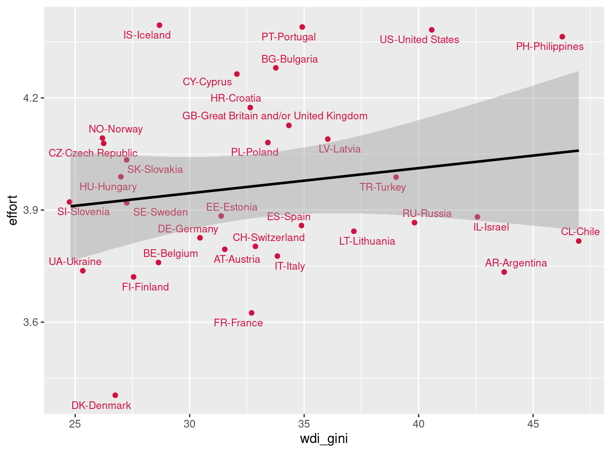
Para identificar mejor los países, podemos también usar la librería countrycode y generar una variable que contenga los nombres de países abreviados en 3 letras (formato iso3c)
data_tot$country3=countrycode(data_tot$v5,'iso3n','iso3c')
dat_scat2=data_tot %>% group_by(country3) %>% na.omit() %>%
select(wdi_gini,effort,country3) %>% summarise_all(mean)
sjPlot::plot_scatter(dat_scat2, wdi_gini, effort,
dot.labels = to_label(dat_scat2$country3),
fit.line = "lm",
show.ci = TRUE
)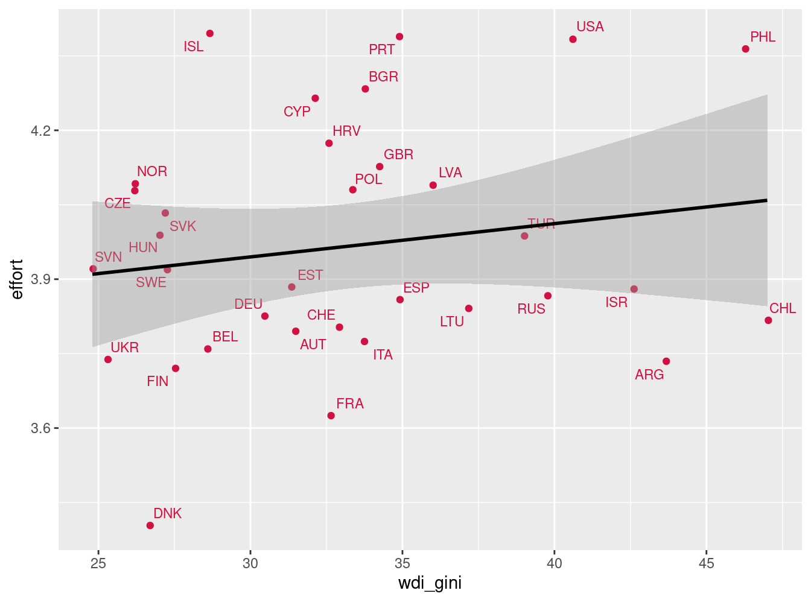
Ya con la base que posee variables de distintos niveles, es posible comenzar con el modelamiento multinivel.